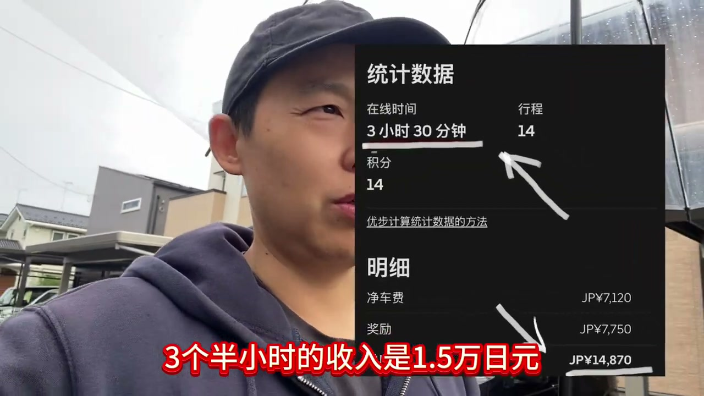

兄弟们，昨天我看到一份账单。
一个在日本开摩托车送外卖的骑手，3个半小时的收入是1.5万日元（账单上是14,870日元）。

如果折算成月薪：一天算7个小时，那就是3万日元；每个月工作20天，那就是60万日元的收入。
今天就来聊一下，这60万日元的含金量——它打败了多少日本IT技术者。
大家知道，一个在日本刚毕业的本科大学生，他拿到的薪资是多少吗？会社给他的薪资大概是20多万吧。加上所有的支出，会社付出的成本大概就是30万左右。
也就是相当于摩托车骑手的一半。
那么这个人要经过多少年，才能达到60万的月收入呢？大概要经过5到10年。
另一方面，从我自己来说，我是有20多年工作经验、零基础日语，到日本第一个月拿到手的收入——到账17.8万日元。
哈哈，20万日元都不到，为什么？因为公司给我定的薪资是30万左右，但会社是做派遣的，我当时有10天左右是没有派出去的。所以那10天就只能拿每个月10万的待机费这种待遇去拿薪资。
所以最后算下来，我那一个月的薪资就只有17万多。
进了第一个现场的项目，工作一段时间，大概三个月左右，那个社长就找我聊。他说，你能到我们会社来，给你什么什么一个待遇。
如果是个人事业主，他给我的这个费用就是60万日元。对，如果是做正社员的，给我的收入就大概只有50万左右。差不多是这个样子。
一个在日本送外卖的骑手，在日本的收入，直接打败了一个5到10年的新卒，整个的成长历程；和一个日语完全不会、然后有20年IT工作经验的IT老油条。
所以我看到这张账单之后，瞬间泪目。